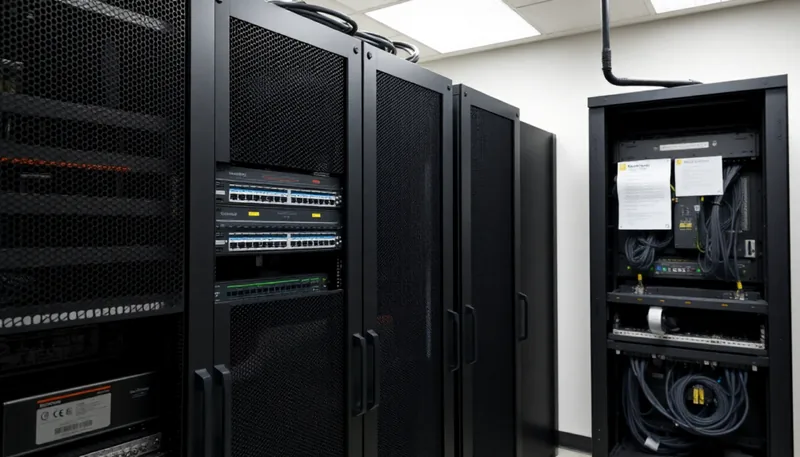
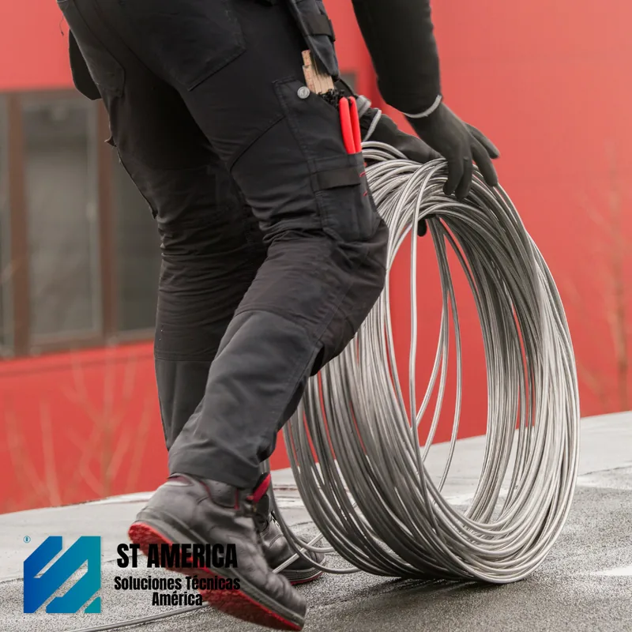
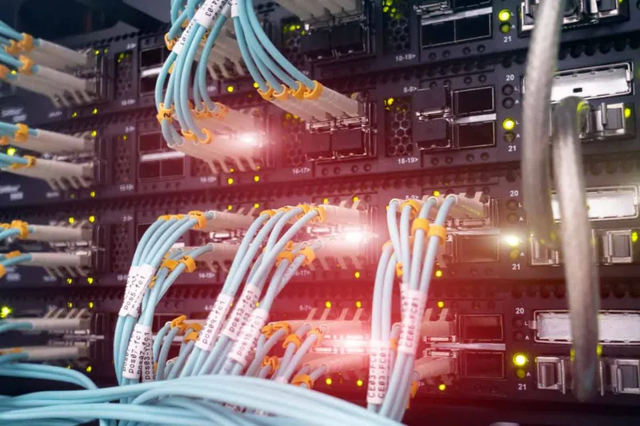
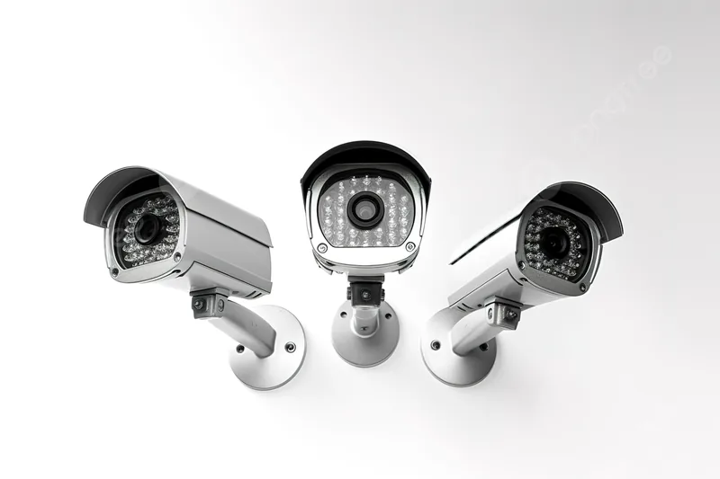

Diseñamos e instalamos redes, videovigilancia, control de acceso y cableado estructurado para empresas e industrias en Córdoba. Respaldo técnico real, antes y después de cada proyecto.
Somos técnicos especializados en conectividad y seguridad electrónica con base en Córdoba. Trabajamos con empresas industriales, comercios, instituciones públicas y organizaciones que necesitan infraestructura que funcione de verdad — sin interrupciones, sin excusas.
Brindar soluciones tecnológicas a medida que garanticen conectividad estable, seguridad efectiva y continuidad operativa para cada cliente.
Consolidarnos como el socio tecnológico de referencia en Córdoba, acompañando el crecimiento de empresas e industrias con infraestructura escalable.
Redes LAN/WAN, WiFi empresarial de alta densidad, fibra óptica y cableado estructurado certificado Cat6/Cat6A para entornos de producción e industria.
ConsultarSistemas CCTV IP de alta resolución, control de acceso biométrico, alarmas perimetrales y monitoreo remoto 24/7 con gestión centralizada.
ConsultarMantenimiento preventivo y correctivo, diagnóstico remoto y guardias técnicas de emergencia para clientes con abono activo.
ConsultarMás de 100 proyectos ejecutados en Córdoba para empresas, industrias e instituciones. Cada solución se diseña a medida del cliente, no de un catálogo.
Trabajamos con marcas líderes como Cisco, Hikvision, Ubiquiti y Furukawa. Equipamiento con garantía oficial y soporte post-instalación incluido.
No desaparecemos después de instalar. Ofrecemos mantenimiento preventivo, respuesta rápida ante fallas y guardias técnicas 24/7 para abonados.
Seleccioná un área para conocer el alcance, los equipos que usamos y qué problema resuelve en tu empresa.
Instalamos sistemas de cámaras IP de alta definición con grabación continua, visión nocturna y acceso remoto desde cualquier dispositivo. Ideal para fábricas, comercios, edificios y espacios públicos.
Diseño, instalación y certificación de redes cableadas e inalámbricas para entornos corporativos e industriales. Trabajamos con switches administrables, routers y electrónica de red de primer nivel.
Cobertura total sin puntos ciegos para plantas de producción, oficinas y espacios abiertos. Roaming inteligente entre access points, segmentación de red y administración centralizada.
Sistemas de acceso con tarjeta, PIN, huella dactilar y reconocimiento facial para controlar el ingreso a sectores sensibles. Registro de horarios e integración con CCTV.
Centralitas IP, teléfonos SIP y soluciones de comunicación unificada para reemplazar la telefonía tradicional. Llamadas internas gratuitas, gestión de colas y grabación de llamadas.
Instalación de enlaces troncales de alta velocidad para interconectar edificios, plantas y sucursales. Fusionamos fibra monomodo y multimodo con equipamiento de última generación.
Casos concretos de infraestructura, seguridad y conectividad desplegados para empresas e instituciones.

Montaje de rack principal, certificación de puestos de red Categoría 6 e instalación de switches administrables para planta industrial.

Instalación de cámaras IP domo PTZ de alta resolución con enlaces inalámbricos y centro de monitoreo continuo las 24 horas.

Fusión y tendido aéreo de fibra óptica monomodo para interconectar depósitos logísticos con tasa de transferencia de 10 Gbps.
Ingeniería e infraestructura tecnológica para empresas, industrias y organismos que necesitan rendimiento sostenido.
Diseño e implementación de infraestructura de red física bajo estándares internacionales para garantizar máxima velocidad, estabilidad y escalabilidad.

Tendido, fusión y certificación de enlaces de alta velocidad para interconectar edificios, plantas industriales y oficinas.

Redes inalámbricas corporativas con roaming inteligente, cobertura total y administración centralizada.

Videovigilancia IP para empresas, industrias, comercios y complejos corporativos.

Soluciones biométricas y electrónicas para controlar ingresos, egresos y sectores críticos.

Soluciones VoIP modernas para optimizar comunicaciones, reducir costos y mejorar la atención al cliente.

Soluciones e infraestructura tecnológica para empresas y organismos líderes que confían en nuestro respaldo.
¿Querés una solución similar para tu empresa o institución?
Solicitar asesoramiento técnicoResolvemos las dudas más comunes antes de que solicites tu cotización.
Trabajamos en Córdoba Capital y en toda la provincia de Córdoba. Para proyectos de gran escala o instituciones fuera de la provincia, consultanos disponibilidad y costos de traslado.
Depende del alcance del proyecto. Una instalación de CCTV o control de acceso en una oficina chica puede resolverse en 1 a 2 días, mientras que cableado estructurado o fibra óptica para plantas industriales puede tomar entre 1 y 3 semanas. Te damos un cronograma estimado en la cotización inicial.
Los equipos cuentan con la garantía oficial del fabricante (Hikvision, Dahua, Cisco, Ubiquiti, Intelbras y Furukawa, entre otros). Además, nuestra mano de obra e instalación tienen garantía propia de Grupo TSC, que detallamos en cada presupuesto según el tipo de proyecto.
Sí. Ofrecemos planes de mantenimiento preventivo y correctivo, con guardias técnicas de emergencia disponibles las 24 horas exclusivamente para clientes con abono activo. Fuera de ese horario, atendemos consultas de lunes a viernes de 08:00 a 17:00 hs.
Primero relevamos tu necesidad por WhatsApp, email o el formulario de contacto. Según la complejidad, coordinamos una visita técnica al sitio para evaluar la infraestructura existente y armar una propuesta a medida, sin cargo por la cotización.
Trabajamos con empresas de todos los tamaños: desde un comercio que necesita 4 cámaras hasta plantas industriales con cableado estructurado completo. Adaptamos el alcance y el presupuesto a la realidad de cada cliente.
Contanos qué necesitás y te respondemos en menos de 24 hs con una propuesta sin cargo.
Teléfono: +54 9 351 454-354
Email: grupotsctecnico@gmail.com
Ubicación: Córdoba, Argentina
Horario de Atención:
Guardias técnicas 24/7 exclusivas para clientes con abono activo.